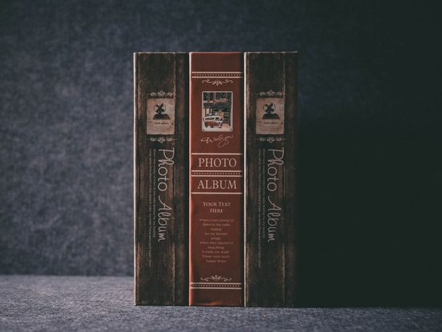
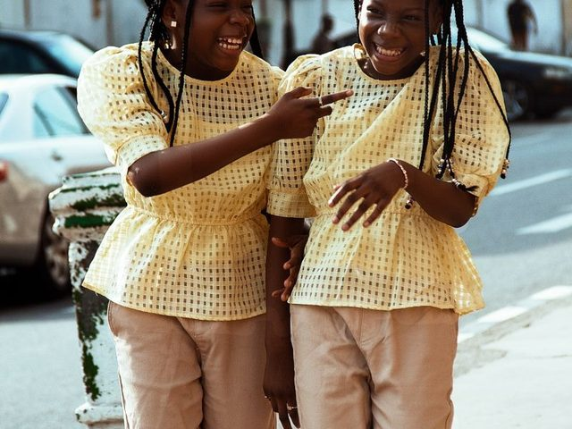
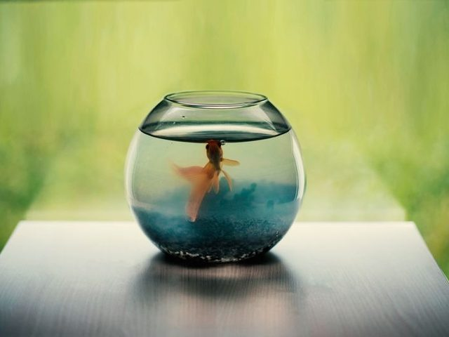
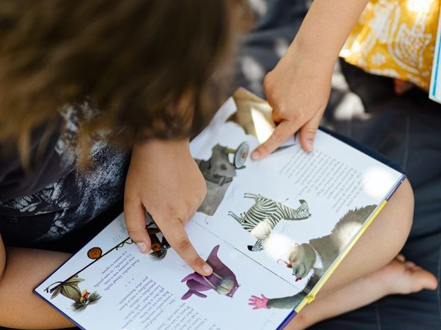
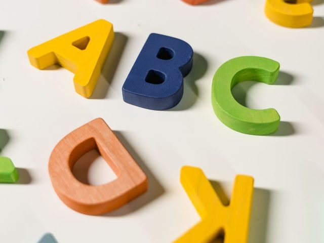
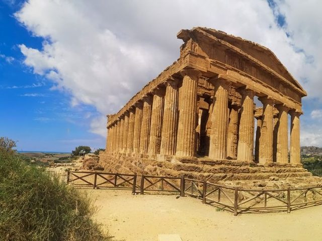
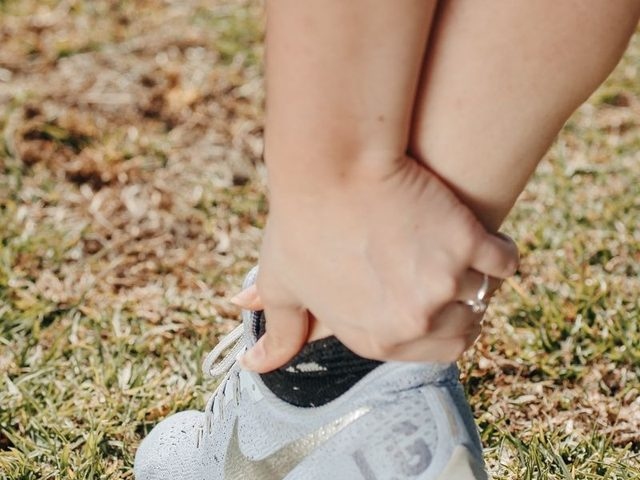
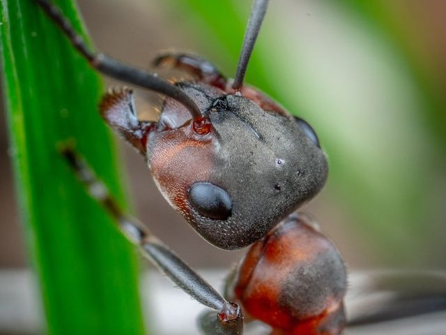

UNIT 2 · VOCABULARY
A 開頭（二）
A-II
38 個單字聽・唸・用
本單元單字一覽
WORD UP「A-II」的 38 個字（air 到 apologize）。紅色＝要複習，藍色標籤＝WORD UP 標熟記、還要在這裡考對。
airaircraftairlineairplaneairportalarmalbumalikealiveallallowalmostalonealongaloudalphabetalreadyalsoaltogetheralwaysamambulanceAmericaAmericanamountancientangelangerangryanimalankleanotheranswerantanyanywayapartmentapologize
每個字都有 🔊，先聽發音、跟著唸，再看例句。
單字 1–4
air
空氣n.
The air in the mountains is fresh.
山上的空氣很新鮮。
山上的空氣很新鮮。
aircraft
飛機；航空器n.
The aircraft landed safely.
那架飛機安全降落了。
那架飛機安全降落了。
airline
航空公司n.
Which airline are you flying with?
你搭哪一家航空公司？
你搭哪一家航空公司？
airplane
飛機n.
We took an airplane to Japan.
我們搭飛機去日本。
我們搭飛機去日本。
單字 5–8
airport
機場n.
Dad picked us up at the airport.
爸爸到機場接我們。
爸爸到機場接我們。
alarm
鬧鐘；警報n.
My alarm rings at six every morning.
我的鬧鐘每天早上六點響。
我的鬧鐘每天早上六點響。

album
相簿；專輯n.
Grandma showed us her old photo album.
奶奶給我們看她的舊相簿。
奶奶給我們看她的舊相簿。

alike
相像的adj.
The twins look alike.
那對雙胞胎長得很像。
那對雙胞胎長得很像。
單字 9–12

alive
活著的adj.
The fish is still alive.
那條魚還活著。
那條魚還活著。
💯
all
全部的；全部adj./pron.
All the students are here.
所有學生都到了。
所有學生都到了。
✅
allow
允許v.
My parents allow me to play games on weekends.
爸媽允許我週末玩遊戲。
爸媽允許我週末玩遊戲。
⏳
almost
幾乎；差不多adv.
It is almost ten o'clock.
快十點了。
快十點了。
單字 13–16
alone
單獨的；獨自adj./adv.
Don't walk home alone at night.
晚上不要一個人走路回家。
晚上不要一個人走路回家。
along
沿著prep.
We walked along the beach.
我們沿著海灘散步。
我們沿著海灘散步。

aloud
大聲地；出聲地adv.
Please read the story aloud.
請把故事唸出來。
請把故事唸出來。

alphabet
字母表n.
There are 26 letters in the English alphabet.
英文字母有 26 個。
英文字母有 26 個。
單字 17–20
✔️
already
已經adv.
I have already finished my homework.
我已經寫完功課了。
我已經寫完功課了。
➕
also
也adv.
I like dogs. I also like cats.
我喜歡狗，也喜歡貓。
我喜歡狗，也喜歡貓。
🧮
altogether
總共；完全adv.
There are thirty students altogether.
總共有三十個學生。
總共有三十個學生。
🔁
always
總是adv.
She always gets up early.
她總是很早起床。
她總是很早起床。
單字 21–24
🙋
am
是（I 的 be 動詞）v.
I am a junior high school student.
我是國中生。
我是國中生。
ambulance
救護車n.
Call an ambulance! Someone is hurt.
快叫救護車！有人受傷了。
快叫救護車！有人受傷了。
America
美國；美洲n.
My uncle lives in America.
我叔叔住在美國。
我叔叔住在美國。
American
美國的；美國人adj./n.
Our new teacher is American.
我們的新老師是美國人。
我們的新老師是美國人。
單字 25–28
💧
amount
數量；金額n.
Drink a large amount of water every day.
每天要喝大量的水。
每天要喝大量的水。

ancient
古代的；古老的adj.
We visited an ancient temple.
我們參觀了一座古老的廟。
我們參觀了一座古老的廟。
angel
天使n.
The little girl sings like an angel.
那個小女孩唱歌像天使一樣。
那個小女孩唱歌像天使一樣。
💢
anger
憤怒n.
He could not hide his anger.
他藏不住怒氣。
他藏不住怒氣。
單字 29–32
😠
angry
生氣的adj.
Mom is angry with me.
媽媽在生我的氣。
媽媽在生我的氣。
animal
動物n.
The panda is my favorite animal.
貓熊是我最喜歡的動物。
貓熊是我最喜歡的動物。

ankle
腳踝n.
I hurt my ankle in PE class.
我在體育課扭傷腳踝。
我在體育課扭傷腳踝。
🍪
another
另一個；再一個adj./pron.
Can I have another cookie?
我可以再吃一塊餅乾嗎？
我可以再吃一塊餅乾嗎？
單字 33–36
✅
answer
答案；回答n./v.
Do you know the answer?
你知道答案嗎？
你知道答案嗎？

ant
螞蟻n.
An ant is very small but strong.
螞蟻很小但很有力氣。
螞蟻很小但很有力氣。
❓
any
任何；一些adj./pron.
Do you have any questions?
你有任何問題嗎？
你有任何問題嗎？
🤷
anyway
無論如何；反正adv.
It was raining, but we went out anyway.
雖然在下雨，我們還是出門了。
雖然在下雨，我們還是出門了。
單字 37–38

apartment
公寓n.
We live in an apartment on the fifth floor.
我們住在五樓的公寓。
我們住在五樓的公寓。
🙇
apologize
道歉v.
He apologized to me for being late.
他因為遲到向我道歉。
他因為遲到向我道歉。
容易搞混的字
| 字 | 用法 | 例子 |
|---|---|---|
| alone / lonely | 獨自（事實）／寂寞（感覺） | live alone ／ feel lonely |
| alike / like | 相像的（放句尾）／像（後面接名詞） | They look alike. ／ He looks like his dad. |
| aloud / loud | 出聲地 ／ 大聲的 | read aloud ／ loud music |
| anger / angry | 名詞 ／ 形容詞 | show his anger ／ be angry |
| already / all ready | 已經 ／ 全都準備好 | I have already eaten. ／ We are all ready. |
頻率副詞與片語
| 說法 | 中文 |
|---|---|
| always | 總是（100%） |
| almost | 幾乎 |
| allow + 人 + to V | 允許某人做… |
| apologize to + 人 + for + 事 | 為某事向某人道歉 |
| be angry with + 人 | 生某人的氣 |
always 這類頻率副詞放在一般動詞前、be 動詞後。
快問快答：中文 → 英文
1空氣air
2航空公司airline
3機場airport
4相簿；專輯album
5活著的alive
6允許allow
7單獨的；獨自alone
8大聲地；出聲地aloud
快問快答：英文 → 中文
1already已經
2altogether總共；完全
3am是（I 的 be 動詞）
4America美國；美洲
5amount數量；金額
6angel天使
7angry生氣的
8ankle腳踝
學完了！接下來
複習方法
review
- 回到「📗 單字卡」，按「遮中文」自己考自己
- 再按「遮英文」，看中文說出英文
- 每個例句跟著 🔊 唸一次
準備好了
- 按右上角「📝 前往測驗」
- 測驗錯的題目要訂正到全對
- 訂正完成補送 1 點